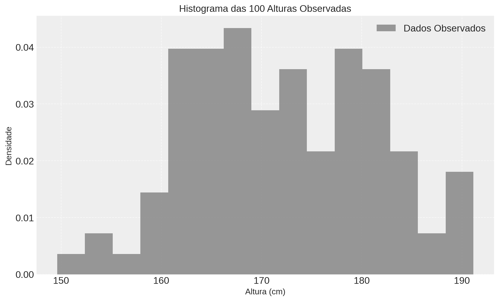
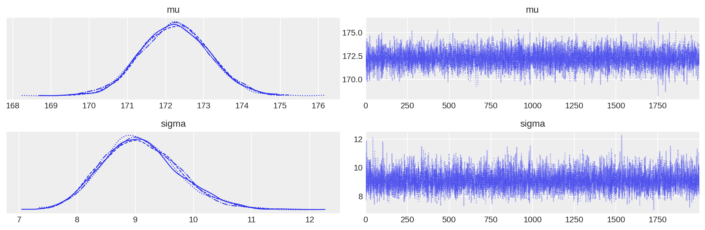
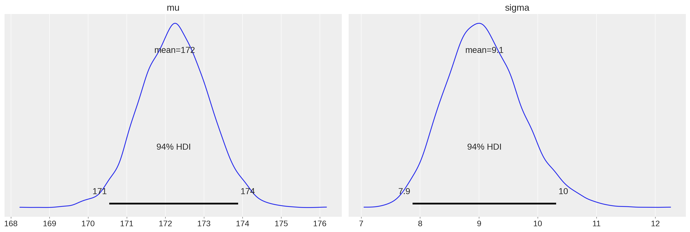
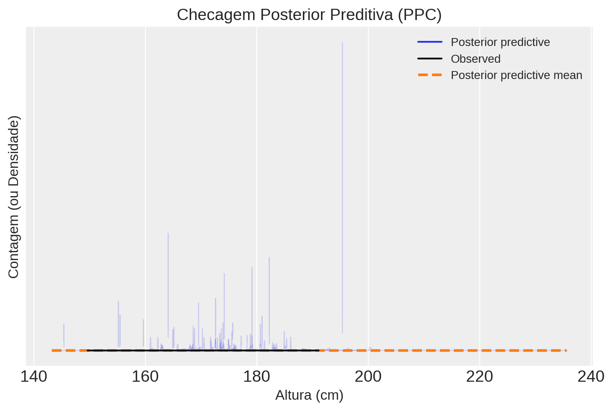

# Importando bibliotecas necessárias
import pymc as pm
import arviz as az
import numpy as np
import matplotlib.pyplot as plt
import seaborn as sns
from scipy import stats
# Configurações para plots
plt.style.use('seaborn-v0_8-darkgrid')
plt.rcParams['figure.figsize'] = (9, 6)
az.style.use("arviz-darkgrid")Distribuição Normal e Inferência Bayesiana
Modelando Dados Contínuos no PyMC - distribições a posteriori
Introdução à modelagem Bayesiana de dados contínuos no PyMC e estimativa da posteriori.
Nesta semana, iremos a explorar a inferência Bayesiana, focando na modelagem de dados contínuos usando a Distribuição Normal. Nosso foco será desenvolver a intuição sobre como escolher distribuições a priori e como o PyMC nos ajuda a combinar essas crenças com dados observados para obter distribuições a posteriori. Para isdso usaremos um exemplo sobre a distribuição de altura em adultos.
Objetivos de Aprendizagem
Ao final desta aula, você deverá ser capaz de:
- Apresentar e entender a Distribuição Normal de forma intuitiva.
- Simular dados a partir de distribuições normais usando
scipy. - Utilizar seu conhecimento subjetivo para propor e visualizar distribuições a priori preditivas para parâmetros de um modelo Normal (como altura humana).
- Definir e ajustar um modelo Normal Bayesiano no PyMC.
- Extrair e interpretar as distribuições a posteriori dos parâmetros do modelo usando
arviz. - Gerar e avaliar checks preditivos a posteriori para verificar o ajuste do modelo.
1 Inferência Posterior e Posterior Predictive Checks
Agora é hora de incorporar dados reais. Vamos usar um conjunto de dados de exemplo (simulado para este notebook, mas pode ser substituído por dados reais da sua turma ou de outra fonte) e realizar a inferência Bayesiana completa.
# Gerando um conjunto de dados de exemplo (substituir por dados reais se disponíveis)
np.random.seed(123) # Para reprodutibilidade
media_real_simulada = 172
dp_real_simulado = 8
n_observacoes = 100
alturas_observadas = stats.norm.rvs(loc=media_real_simulada, scale=dp_real_simulado, size=n_observacoes)
print(f"Dados observados (primeiros 10): {alturas_observadas[:10]}")
print(f"\nMédia amostral: {np.mean(alturas_observadas):.2f} cm")
print(f"Desvio padrão amostral: {np.std(alturas_observadas):.2f} cm")
plt.figure(figsize=(10, 6))
plt.hist(alturas_observadas, bins=15, density=True, alpha=0.8, color='gray', label='Dados Observados')
plt.title(f'Histograma das {n_observacoes} Alturas Observadas', fontsize=14)
plt.xlabel('Altura (cm)', fontsize=12)
plt.ylabel('Densidade', fontsize=12)
plt.grid(True, linestyle='--', alpha=0.7)
plt.legend()
plt.show()Dados observados (primeiros 10): [163.31495517 179.97876357 174.26382798 159.94964229 167.37119798
185.2114923 152.58656605 168.56869897 182.12749007 165.06607678]
Média amostral: 172.22 cm
Desvio padrão amostral: 9.03 cm
Agora, definimos o modelo Bayesiano COMPLETO no PyMC. Isso inclui as distribuições a priori (compartilhadas) e o likelihood, que conecta os parâmetros aos dados observados.
# Definindo o modelo Bayesiano COMPLETO no PyMC
with pm.Model() as normal_model:
# Priores (usamos as priores compartilhadas da parte anterior)
mu = pm.Normal("mu", mu=175, sigma=10) # Priori para a média
sigma = pm.HalfCauchy("sigma", beta=0.1) # Priori para o desvio padrão
# Likelihood: Distribuição dos dados OBSERVADOS, condicionada pelos parâmetros
# Aqui, informamos ao modelo quais dados foram observados usando o argumento 'observed'
likelihood = pm.Normal("likelihood", mu=mu, sigma=sigma, observed=alturas_observadas)
# Inferência: Amostragem da distribuição a posteriori usando MCMC
# O PyMC usa o sampler NUTS (No-U-Turn Sampler) por padrão
# Ele explora o espaço de parâmetros para encontrar as regiões de alta probabilidade a posteriori
# draws: número de amostras a guardar por cadeia
# tune: número de passos de aquecimento (tuning) para o sampler convergir (descartados)
# cores: número de núcleos da CPU para rodar cadeias em paralelo (acelera)
# return_inferencedata=True: retorna um objeto ArviZ InferenceData, que é conveniente
trace = pm.sample(draws=2000, tune=1000, cores=4, return_inferencedata=True, random_seed=42)Initializing NUTS using jitter+adapt_diag...
Multiprocess sampling (4 chains in 4 jobs)
NUTS: [mu, sigma]Sampling 4 chains for 1_000 tune and 2_000 draw iterations (4_000 + 8_000 draws total) took 1 seconds.O pm.sample() executa o algoritmo MCMC. Ele gera amostras da distribuição a posteriori conjunta de \(\mu\) e \(\sigma\). O resultado trace (um objeto InferenceData do ArviZ) contém essas amostras.
Inspeção e Interpretação da Posteriori:
As amostras na trace representam nosso conhecimento atualizado sobre \(\mu\) e \(\sigma\) APÓS vermos os dados. Podemos resumir e visualizar essas amostras para entender a distribuição a posteriori.
# Resumo da distribuição a posteriori usando ArviZ
# 'var_names' especifica quais variáveis queremos sumarizar
# hdi_prob: probabilidade coberta pelo Intervalo de Maior Densidade (HDI - Highest Density Interval)
summary_stats = az.summary(trace, var_names=["mu", "sigma"], hdi_prob=0.94, kind='stats')
print("Resumo das Estatísticas Posteriores:")
print(summary_stats)
# r_hat: Deve ser próximo de 1 (< 1.01 é bom), indica convergência entre as cadeias MCMC
# ess_bulk / ess_tail: Effective Sample Size (tamanho efetivo da amostra), indica eficiência da amostragemResumo das Estatísticas Posteriores:
mean sd hdi_3% hdi_97%
mu 172.242 0.888 170.545 173.887
sigma 9.094 0.656 7.872 10.313O resumo mostra a média posterior, desvio padrão posterior e um Intervalo de Alta Densidade (HDI) de 94% para cada parâmetro. O HDI é um intervalo de credibilidade Bayesiano que contém 94% da massa de probabilidade posterior, incluindo os valores mais prováveis.
Visualizações são essenciais para entender a posteriori:
# Visualização da amostragem MCMC (Trace Plot) e da densidade a posteriori marginal
# O trace plot (gráfico da esquerda) mostra a trajetória do sampler ao longo das iterações para cada cadeia.
# Idealmente, parece um "ruído branco estacionário", sem tendências ou padrões óbvios.
# O histograma ou KDE (gráfico da direita) mostra a distribuição marginal a posteriori estimada de cada parâmetro.
az.plot_trace(trace, var_names=["mu", "sigma"])
plt.tight_layout()
plt.show()/tmp/ipykernel_148184/2558706149.py:6: UserWarning: The figure layout has changed to tight
plt.tight_layout()
# Visualização das densidades a posteriori marginais com média, mediana e HDI
# Este plot foca na distribuição de probabilidade de cada parâmetro INDIVIDUALMENTE,
# após levarmos em conta os dados e as priores.
az.plot_posterior(trace, var_names=["mu", "sigma"], hdi_prob=0.94)
plt.show()
Discussão: * Compare as distribuições a posteriori (visualizadas acima) com suas distribuições a priori iniciais (que você visualizou na Parte 2). Como os dados atualizaram suas crenças? Os centros das distribuições mudaram? Elas ficaram mais “estreitas” (menor incerteza)? * Qual é a média posterior estimada para \(\mu\)? E para \(\sigma\)? Como esses valores se comparam com a média (
171.66) e o desvio padrão (7.90) calculados diretamente a partir dos dados observados (estimativas frequentistas)? Geralmente são próximos, mas não idênticos devido à influência (mesmo que pequena) das priores. * Interprete o intervalo HDI de 94% para \(\mu\) e \(\sigma\). Por exemplo, para \(\mu\), o intervalo é[170.09, 173.23]. Isso significa que, após observar os dados e considerando nossas priores, temos 94% de certeza (probabilidade Bayesiana) de que a verdadeira média populacional \(\mu\) da altura está entre 170.09 cm e 173.23 cm. Faça uma interpretação similar para \(\sigma\).
Checagem Posterior Preditiva:
Assim como fizemos a checagem priori preditiva, podemos fazer uma checagem posterior preditiva. Desta vez, geramos dados simulados a partir do modelo USANDO as amostras da distribuição a posteriori dos parâmetros (\(\mu\) e \(\sigma\)). Cada conjunto de dados simulado usa um par \((\mu, \sigma)\) sorteado da posteriori. Isso nos diz que tipos de dados o modelo espera gerar agora que ele aprendeu com os dados observados. É uma ótima maneira de avaliar o ajuste do modelo (model fit). Se os dados simulados a posteriori forem muito diferentes dos dados observados, o modelo pode não estar capturando bem as características dos dados reais.
# Gerando amostras da POSTERIOR preditiva
# Usamos o 'normal_model' (que contém o likelihood e as priores)
# e o 'trace' (que contém as amostras da posteriori dos parâmetros)
with normal_model:
posterior_predictive_samples = pm.sample_posterior_predictive(trace, var_names=["likelihood", "mu", "sigma"], random_seed=42)Sampling: [likelihood, mu, sigma]# Visualizando a checagem posterior preditiva com ArviZ
# Comparamos a distribuição dos dados observados (y) com as distribuições
# de múltiplos conjuntos de dados simulados a partir da posteriori (y_pred).
# 'kind='hist'' plota o histograma dos dados observados (azul escuro) e sobrepõe
# histogramas de vários conjuntos de dados simulados da posteriori (azul claro).
# Idealmente, o histograma observado deve se parecer com os simulados.
az.plot_ppc(posterior_predictive_samples, num_pp_samples=100) # num_pp_samples controla quantos datasets simulados mostrar
plt.title('Checagem Posterior Preditiva (PPC)', fontsize=14)
plt.xlabel('Altura (cm)', fontsize=12)
plt.ylabel('Contagem (ou Densidade)', fontsize=12)
plt.legend(fontsize=10)
plt.show()
Discussão: * Observe a figura
plot_ppcacima. Quão bem o histograma dos dados observados (geralmente em azul mais escuro ou preto) se alinha com os histogramas dos dados simulados a posteriori (linhas ou área em azul claro)? Eles cobrem o mesmo intervalo? Têm formas semelhantes? * O modelo Normal parece adequado para descrever a distribuição das alturas neste conjunto de dados? Se o histograma observado fosse muito diferente (ex: bimodal, muito assimétrico) dos simulados, isso indicaria que o modelo Normal talvez não seja a melhor escolha para estes dados específicos. Neste caso, o ajuste parece razoável.
2 Conclusão
Nesta semana, exploramos a Distribuição Normal e aprendemos como aplicá-la em um fluxo de trabalho de inferência Bayesiana usando o PyMC. Vimos como começar com intuições (priores), checar essas intuições (cheque priori preditivo), combinar priores com dados (inferência posterior via MCMC no PyMC) e avaliar o ajuste do modelo resultante (cheque posterior preditivo). Você agora tem as ferramentas básicas para modelar dados contínuos com incerteza usando a abordagem Bayesiana no Python!